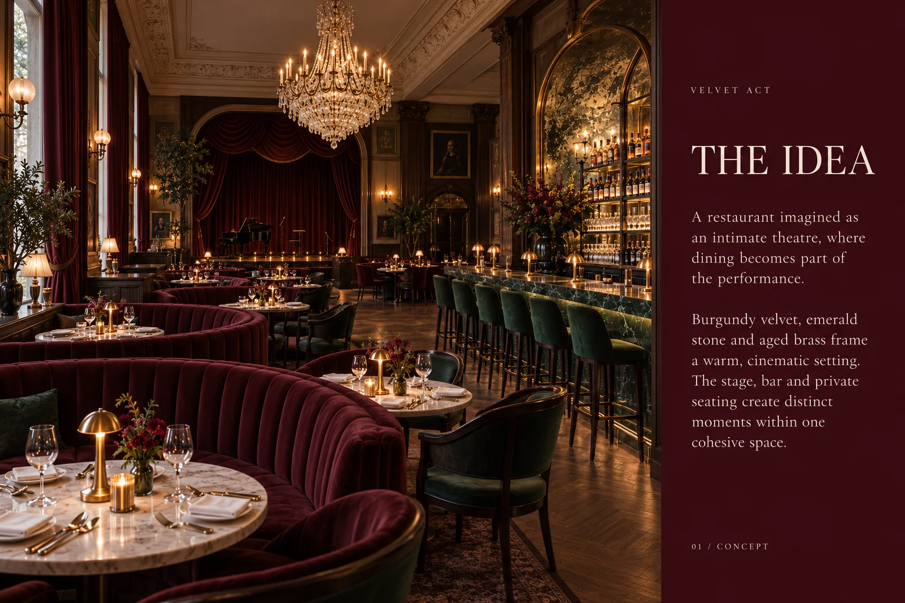
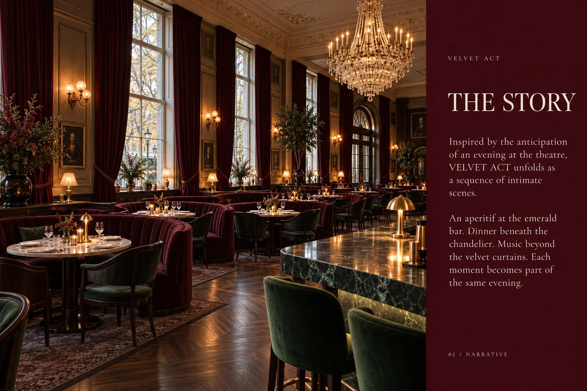
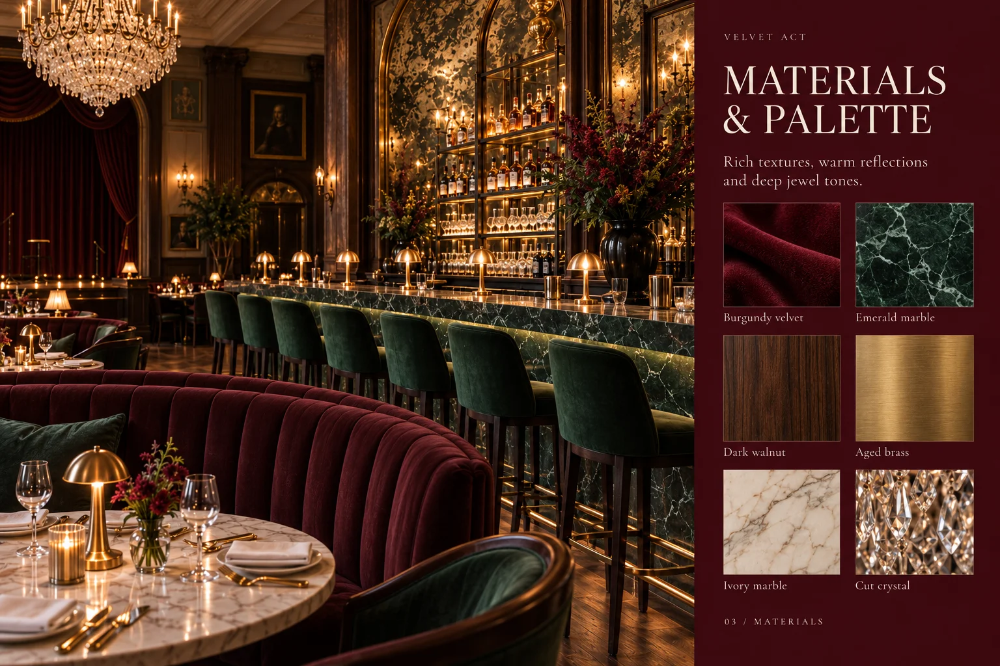
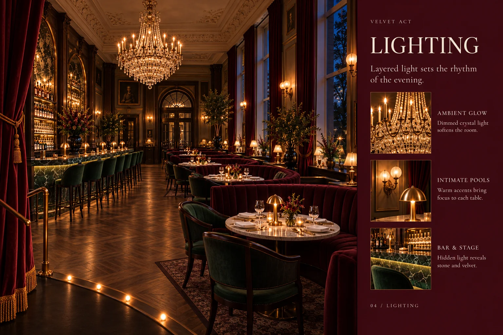
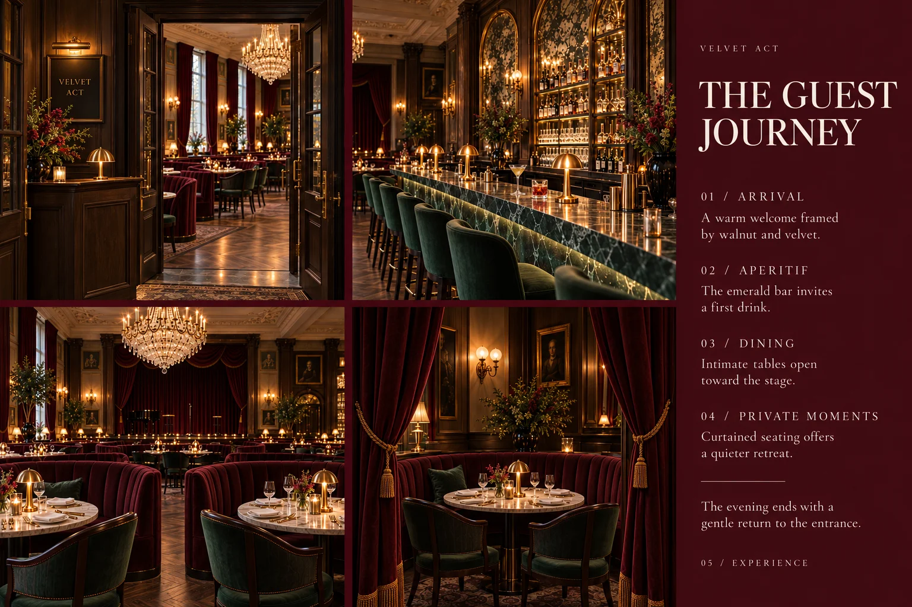
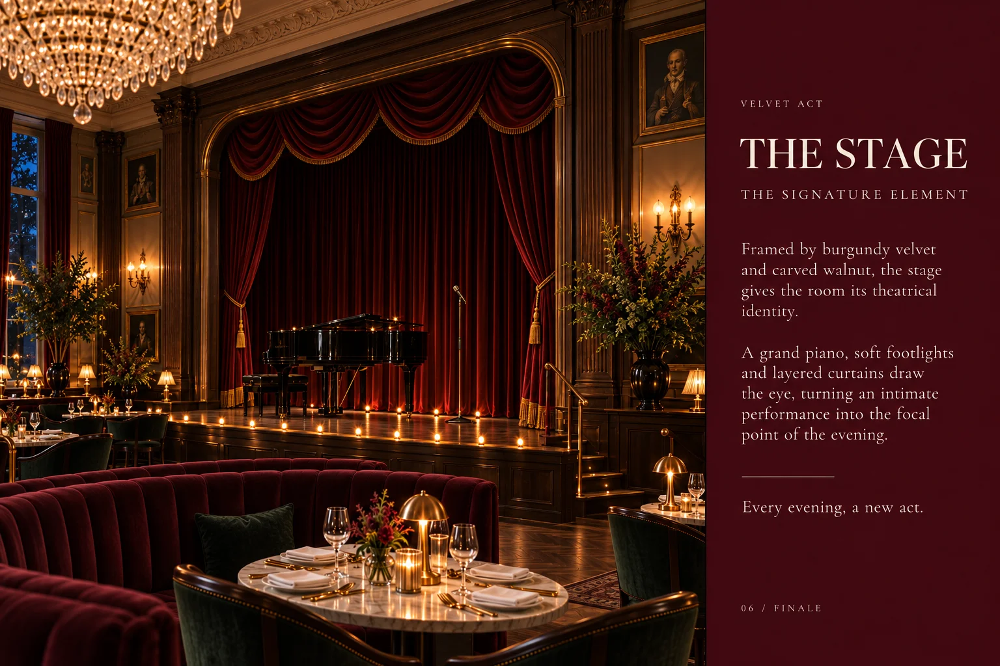

Theatrical restaurant concept
VELVET ACT
Dinner as performance — burgundy velvet, emerald stone and a room that behaves like a stage.

VELVET ACT is a theatrical restaurant concept where dinner is staged like an evening performance. Burgundy velvet, emerald marble and brass detailing set the scene, and a small stage with a grand piano turns the dining room into an auditorium. Guests are not only served — they are part of the act. The concept explores the overlap between restaurant and theatre: curtain-like drapery, spotlighted tables, a slow build from arrival to finale. The drama is held in check by a restrained palette and soft, directional light, so the room feels glamorous rather than loud.
Material direction
Burgundy velvet; emerald marble; polished brass; dark stained timber; smoked mirror; heavy drapery; fluted wall panels. These are concept-stage material directions, with final products and detailing to be developed separately.
My role
Concept, atmosphere, lighting, materials and guest journey — Maria Andriiuk.
Concept & story
The name treats the evening as a play in acts: arrival is the overture, the first drink the opening scene, dinner the main act and the piano finale the encore. The interior borrows its language from classic theatres — velvet, brass, stage light — and translates it into an intimate dining setting.
Emotion & atmosphere
The intended mood is glamorous, intimate and slightly decadent. Deep red absorbs the light, emerald stone gives it back, and every table is lit like a small stage of its own. The sensory brief explores the muffled acoustics of heavy drapery and the pleasant anticipation of a curtain about to rise.
Light & material direction
Lighting directs attention like stagecraft: narrow spots on tables, a warm wash on drapery, backlit bar shelving and a focused beam held for the piano. Velvet and timber keep the shadows soft; marble and brass carry the highlights. Technical lighting, stage integration and final specifications would be resolved during further design development.
Guest journey
01 / Overture — Arrival through a curtained threshold into low red light. 02 / Opening scene — A first pour at the emerald marble bar. 03 / The act — Dinner at spotlighted tables within the velvet room. 04 / Intermission — A pause between courses as the room’s lighting shifts. 05 / Finale — The evening closes with live piano on the small stage.
Project scope
This self-initiated, unbuilt concept is presented through seven boards covering the idea, story, atmosphere, light and materials, guest journey and final composition. Concept imagery communicates the creative direction. Measured planning, construction documentation, engineering and site delivery are outside this concept study.

The idea — A restaurant conceived as a theatre, where dinner unfolds in acts.Open full size ↗
The story — Curtain-like drapery and spotlighted tables turn guests into an audience.Open full size ↗
Materials & palette — Burgundy velvet, emerald marble and brass against dark timber.Open full size ↗
Lighting — Stagecraft as lighting design: spots, washes and a single beam for the piano.Open full size ↗
The guest journey — Five acts from curtained arrival to the final note.Open full size ↗
The finale — A burgundy stage and grand piano close the evening like an encore.Open full size ↗